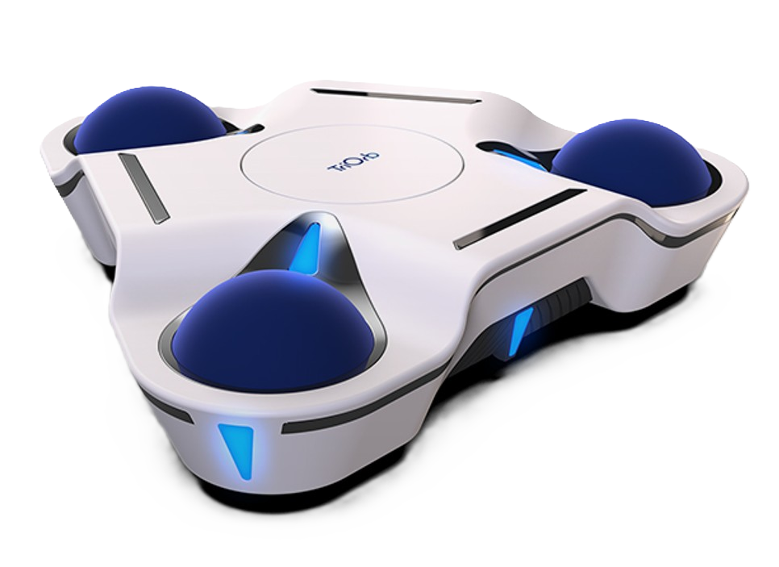

TriOrb BASE Developer Guide
TriOrb BASE 開発ガイド — Version & Language Picker

日本語
TriOrb BASE の開発者向けドキュメントです。自律移動パッケージの ROS 2 API リファレンス、上位側制御 ECU 通信ライブラリ、運用ガイド、 変更履歴をまとめています。版ごとに固定リンクを提供するため、本ページ から目的のバージョンを選択してください。
English
Developer documentation for TriOrb BASE. Covers the ROS 2 API reference for the autonomous navigation package, the host-side control ECU library, operational guides, and the changelog. Each version has a stable URL — pick the version you want below.
Versions
-
v1.2.4 Latest
-
v1.2.3 Archive
-
v1.2.2 Archive
Companion services
-
REST API
-
MCP server Open